My Role & Skills Used
During the three months (02/2016 - 04/2016), I collaborated with three developers and designed Bolt. As the only UX/UI designer in the team, I conducted interviews to explore user needs, and 2 rounds of usability testings and thus iterate on wireframes and prototypes based on the feedbacks.
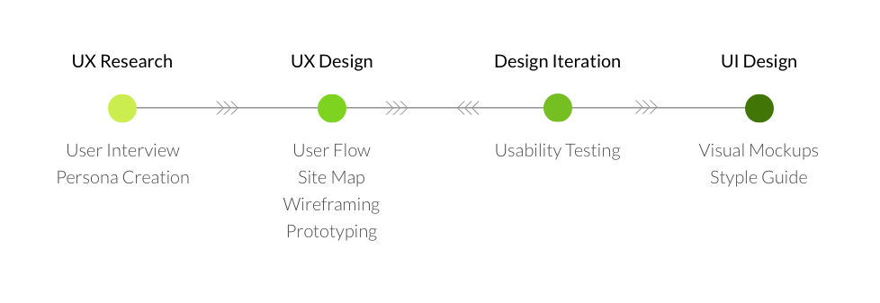
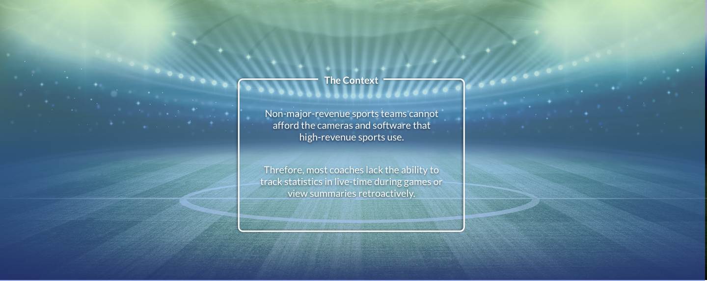
User Research
It was the Michigan Field Hockey team that brought these problems to our team. The main problems are that it takes the team manager a lot of time to track statistics and that the summaries the manager provides are not very useful. To better understand the users we were going designed for, I created a persona based on the interviews and observations with the Field Hockey team.
Comparative Analysis
I reviewed and tested more than a dozen of sports team management apps, including both mobile apps and web apps. I identified three features that would benefit the users most.
- Player management
- Game schedule
- Stats summary
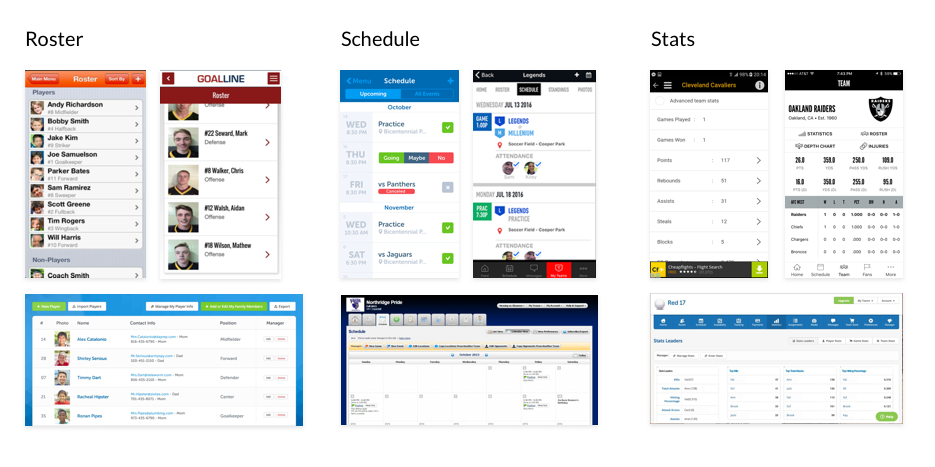
Feature Prioritization
I prioritized the features with the three developers by plotting them along a matrix what was necessary as well as feasible.
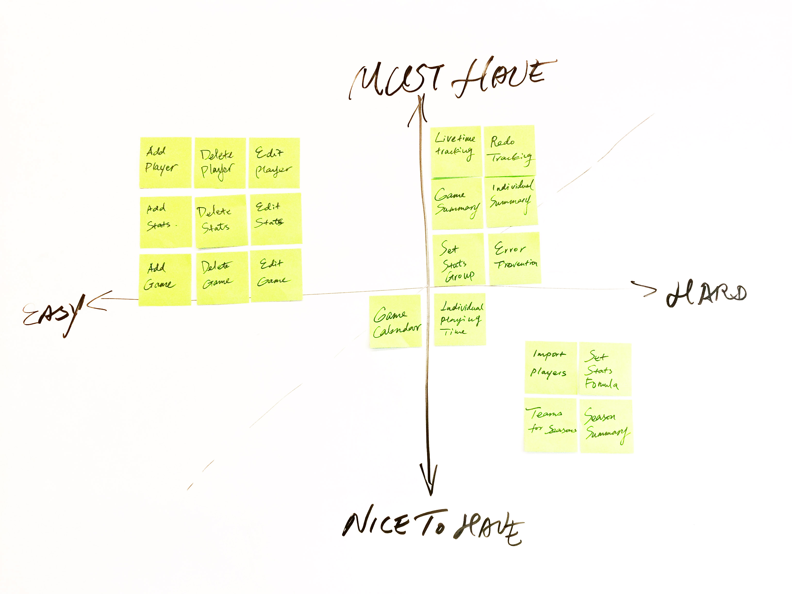
Information Architecture
I reviewed and tested more than a dozen of sports team management apps, including me. I identified three features that would benefit the users most.
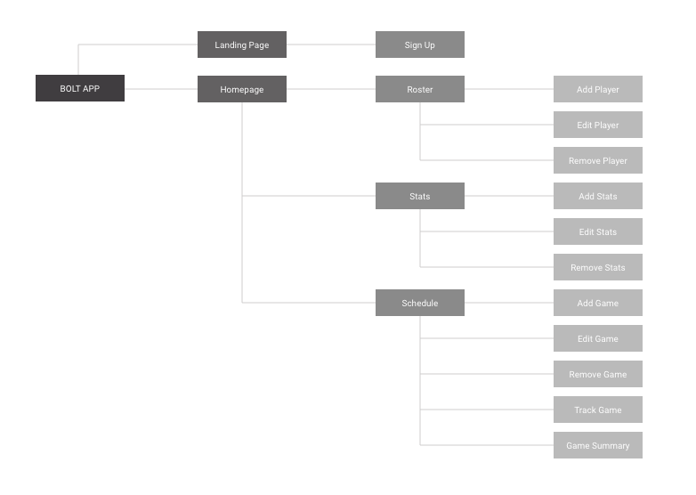
User Flow
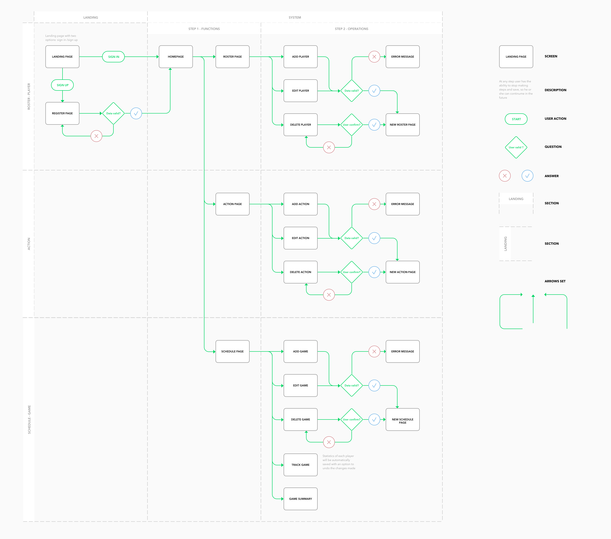Usability Testing
Our testers included two players, one manager, and two coaches, who are all part of the University of Michigan Field Hockey Team. After introducing the MVP to them, we asked them to complete a certain tasks, such as view and update stat, locate and select players, and view team summaries. After that, we collected their ratings and opinions on some key features.
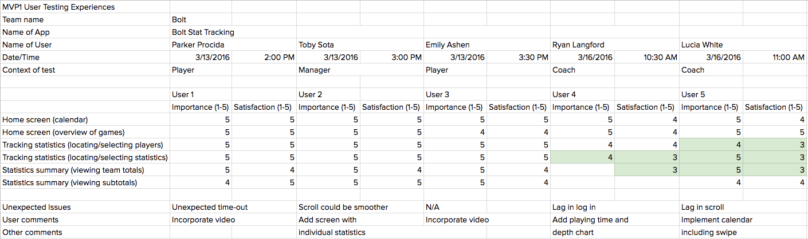
The first three testers, which are the players and the manager, were pretty satisfied with our app. They did have a few comments. Especially, two of the players thought it would be useful to incorporate video. For example, if they clicked on the total number of goals on the summary screen, they would want to see a highlight video with all of the goals scored in that game.
Feedbacks from coaches
The last two testers, which are the coaches, were a little more critical and their biggest concerns had to do with tracking and viewing statistics. They did want to make it easier to select the players in the tracking screen. In addition, they also want to be able to track and view the individual playing time of each player.
Iterations
Based on the feedbacks of usability testing, our team incorporated some new features as well as improved the user interfaces.
Stat tracking page
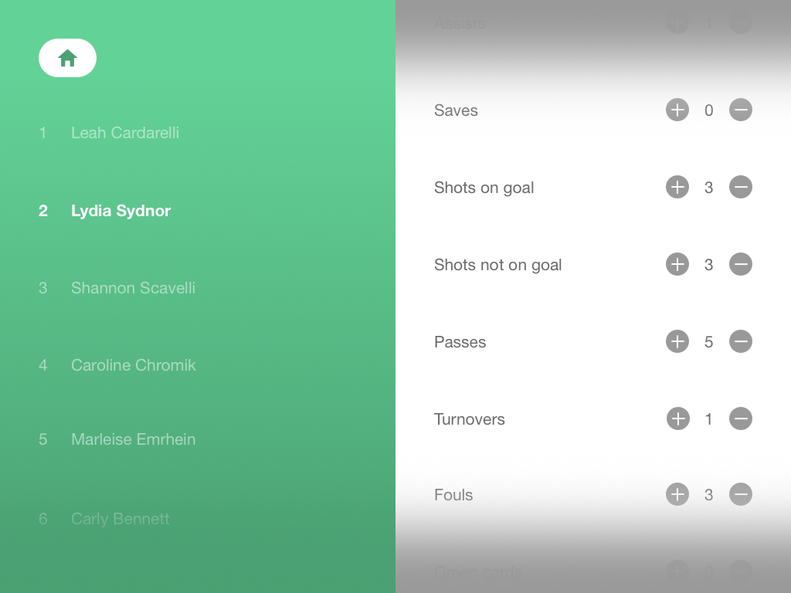
MVP1 Feedbacks
- One of the users' biggest concerns was the efficiency of the tracking screen because it would be difficult to locate and select a player during gameplay.
- Users also felt that a valuable stat to most coaches would be playing time.
- One other small comment we got was that it was hard to tell which game was currently being tracked.
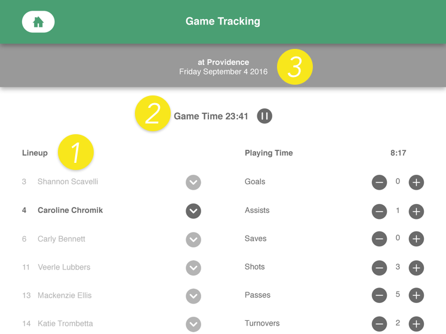
MVP2 Updates
- New feature added: Our solution was to sort the roster based on who is currently in the game, with those players appearing at the top of the list. We also added a button next to each player’s name to insert or remove them from the game, at which time the list would rearrange.
- New feature added: We have added a “global pause/resume” button that appropriately pauses/resumes playing time tracking for each player based on whether they are in the game.
- UI improvement: the current game is indicated on the top of the page.
Stat summary page
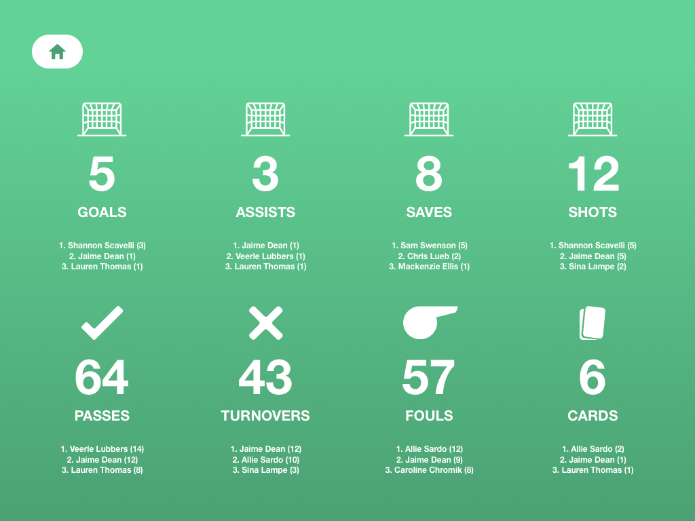
MVP1 Feedbacks
- Some of the testers mentioned that individual stats are as valuable as team totals.
- Some of the testers felt confused about which game they were looking at.
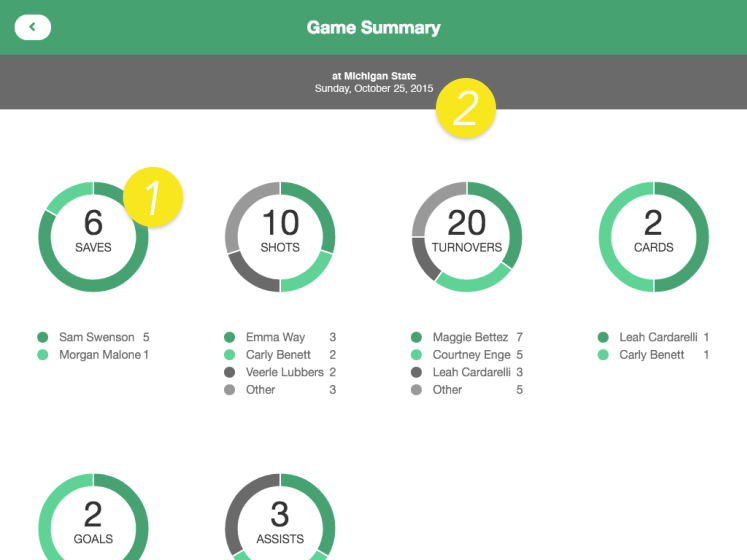
MVP2 Updates
- UI improvement: Pie charts contain not only the stats of team totals but also the data of top players.
- UI improvement: The current game is indicated on the top of the page.
Lightweight stat tracking for any sport at any level
For amateur and low-revenue sports organizations who have a minimal budget, time and/or personnel constraints, and a unique use case, Bolt is a web app that provides a lightweight, low-cost, customizable stat tracking framework. Unlike competitors like TeamSnap, we have assembled a free web application that provides the minimum feature set to bring the power of data to the masses.
To play with the web app:
Reflection
This project was completed in a total of 12 weeks with 3 developers. Through this project, I learned that every developer has his or her own work process. As a UX/UI designer, it's important for me to understand how they like to work, ask how they would like the screens to be delivered and what's their experience with other designers for better cooperations.